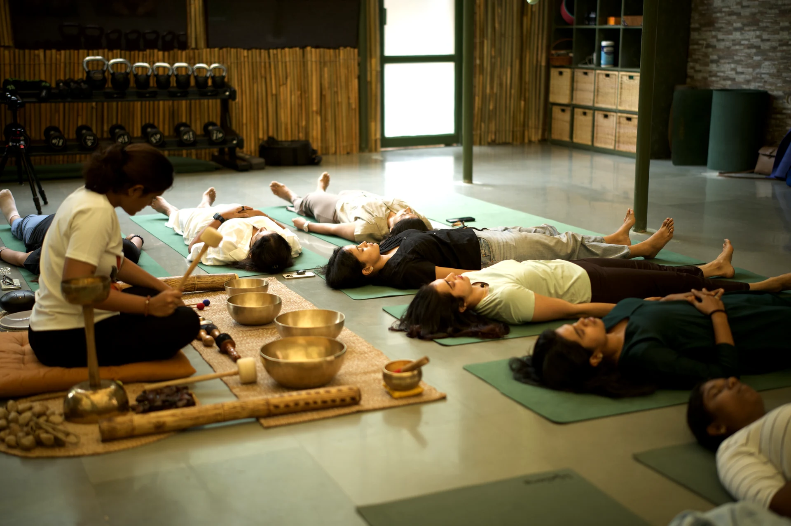
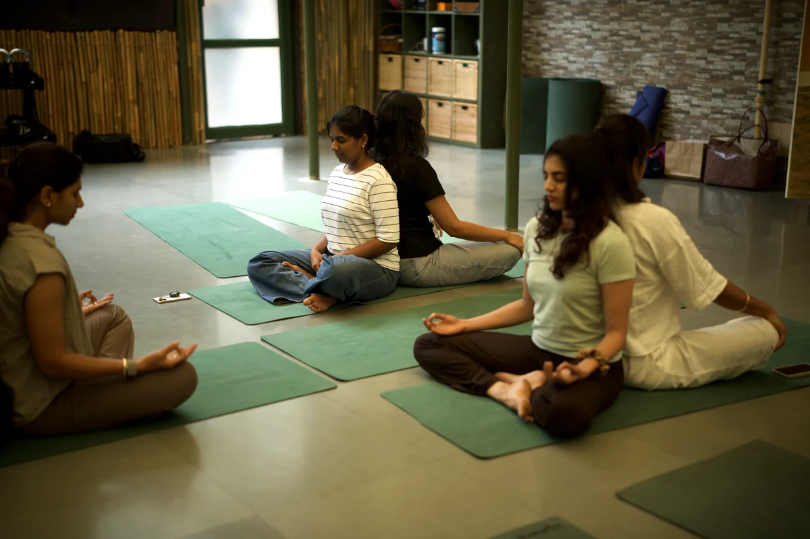
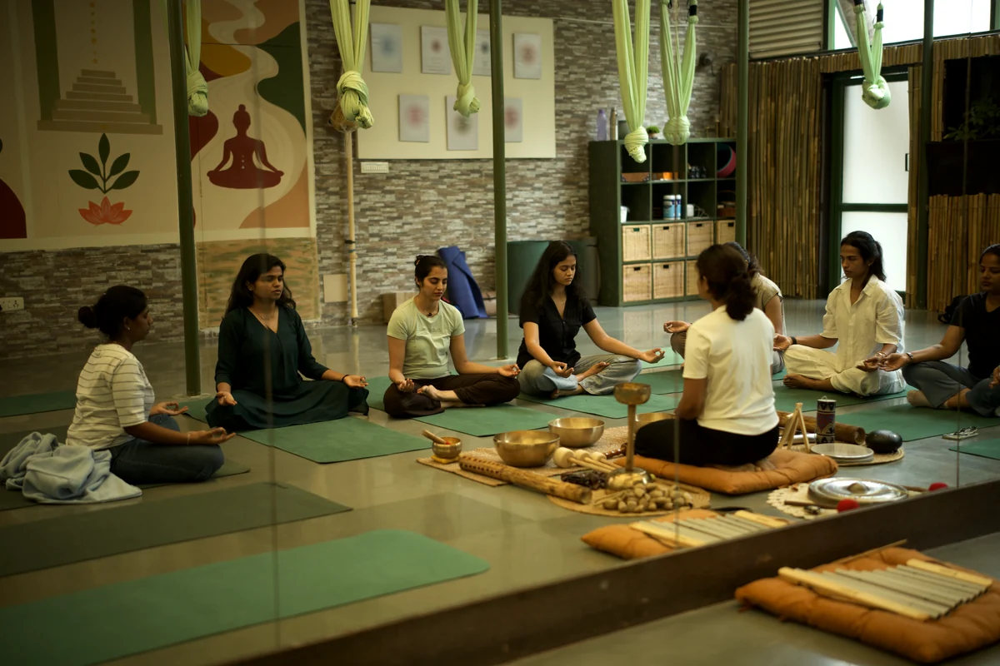

THE SPHERE EXPERIENCE
Move & Reconnect
Yoga, functional movement, traditional practices and mindful ways of reconnecting with the body.
Explore this experience
THE SPHERE
A private space for women who do a lot, carry a lot, and deserve a space that asks nothing of them.
The Sphere is an intimate women’s wellness club created around meaningful experiences, conscious living and genuine connection.
Our philosophy
BEYOND EVERY ROLE YOU HOLD
A place where you don’t have to perform,
achieve or keep up. You simply arrive.
THE SPHERE EXPERIENCE
We believe meaningful experiences happen when there is room to connect — with yourself and with others.
THE SPHERE EXPERIENCE
Yoga, functional movement, traditional practices and mindful ways of reconnecting with the body.
Explore this experience
THE SPHERE EXPERIENCE
Sound healing, meditation, breathwork and experiences designed to quiet the noise.
Explore this experience
THE SPHERE EXPERIENCE
Honest, thoughtful conversations on womanhood, ambition, relationships, identity and the realities of modern life.
Explore this experience
THE SPHERE EXPERIENCE
Immersive experiences that invite you to explore something new.
Explore this experience
THE SPHERE EXPERIENCE
Intimate gatherings designed to build genuine relationships among like-minded women.
Explore this experienceTHE WOMEN OF THE SPHERE
Founders. Leaders. Entrepreneurs. Creatives. Mothers. Professionals. Women building businesses, families, careers and lives they are proud of.
What brings them together isn’t what they do.
It’s how they choose to live.
Curious. Intentional. Open. Evolving.


A PRIVATE CIRCLE
For women who value privacy, meaningful connection
and thoughtfully curated experiences.
A small circle. A monthly rhythm.
A personal conversation first.
THE SPHERE JOURNAL
A space for thoughts, conversations and ideas around modern womanhood.
WELLNESS IN YOUR INBOX
Early word on gatherings, gentle reminders to pause, and the occasional note from the circle. Sent rarely. Never shared.